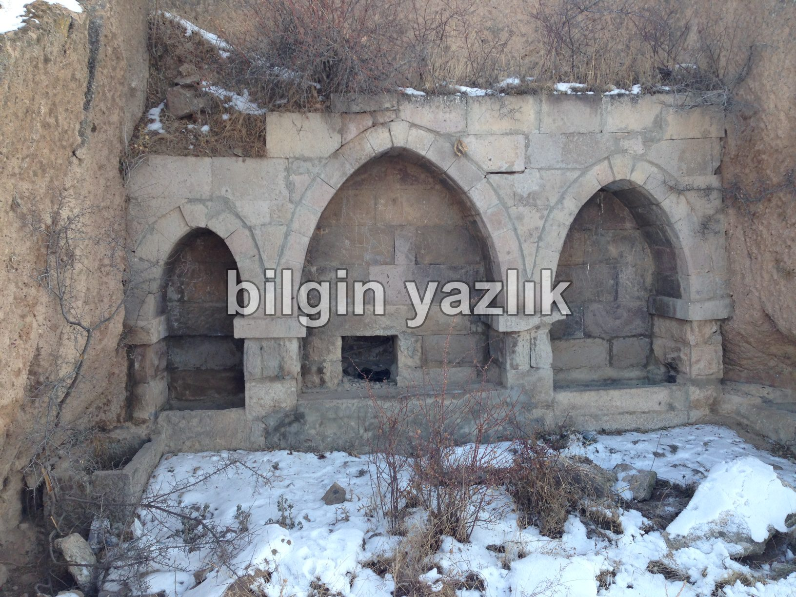
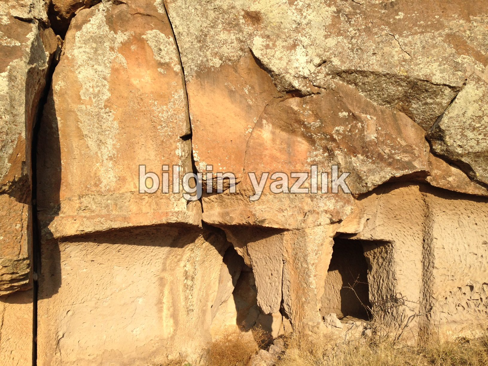
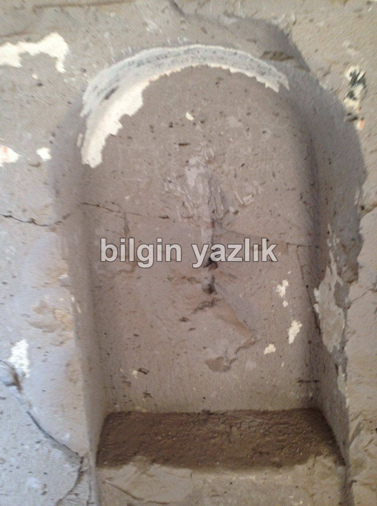
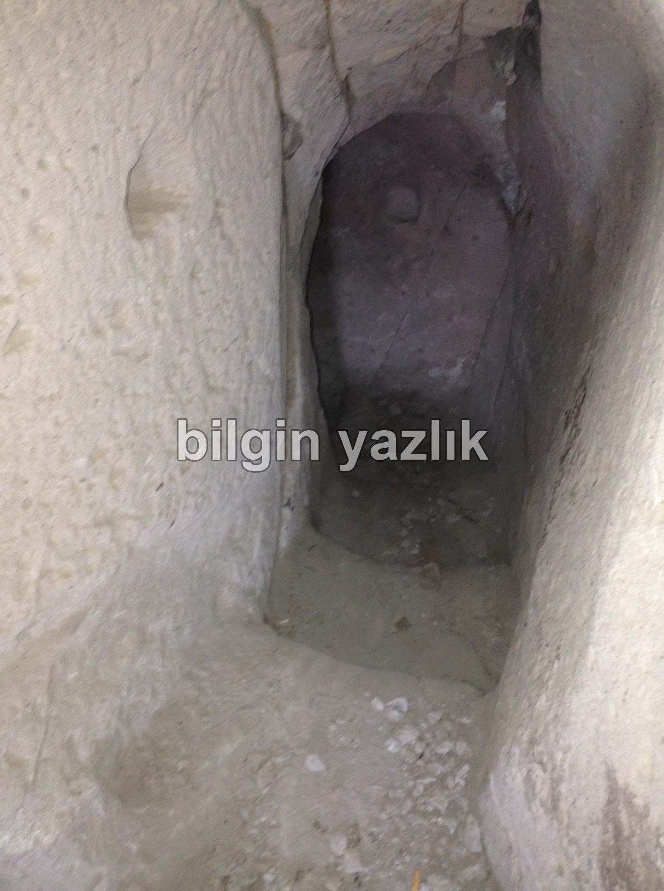
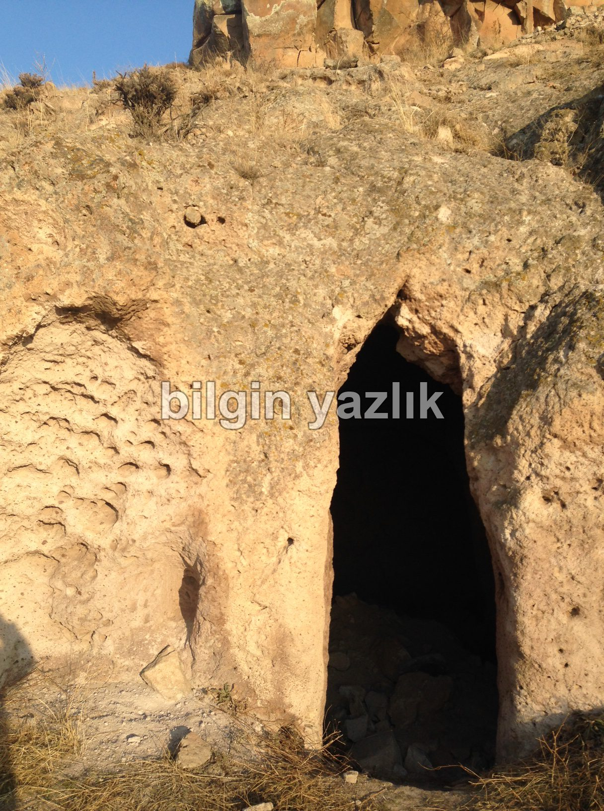
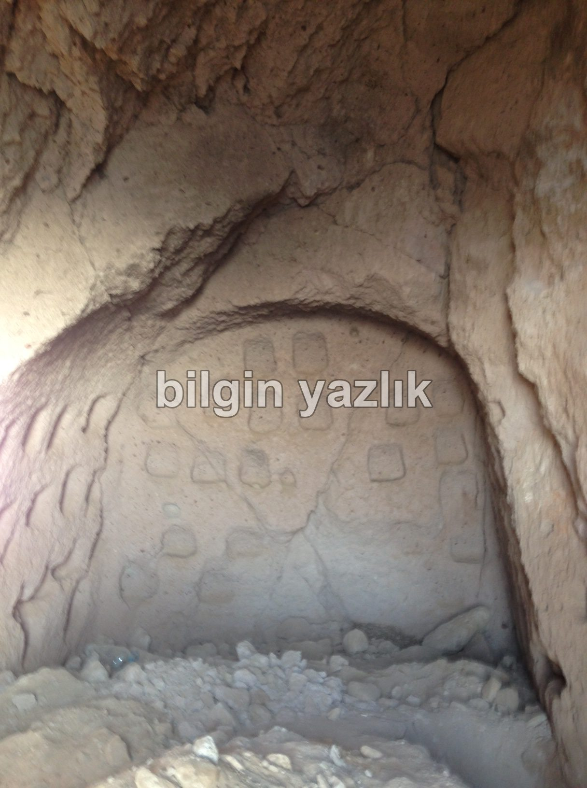

Avedik Vadisi Yer Altı Yerleşkesi İncelemesi
Hafta sonunu değerlendirmek maksadı ile fazla uzun sürmeyecek bir yürüyüş yapmaya karar verdim. Eve döndüğümde 14,3 km yol yürüdüğümü farkettim. Bu yürüyüşte ilk defa gördüğüm yer altı yerleşkesini sizlerle paylaşmak istiyorum.
Yer altı şehri diyemiyorum çünkü derinlemesine içine girme şansım olmadı, fakat yerin altına doğru inen merdivenleri gördüm. Dolayısı ile bir yerleşke olduğu kesin ama şehir denecek kadar büyük mü bilemiyorum, bunu da ilerleyen günlerde gerçekleştireceğim yeni ziyaretlerde kesinleştireceğim. Yerleşkenin pencere ve kapılarının çok düzgün kesimli olduğunu aşağıdaki fotoğraflardan siz de görebilirsiniz. Yerleşke bir bütün olarak Güneye bakıyor ve derin bir vadinin yamacına kurulmuş. Civarda yaptığım araştırmalarda düzgün kesimli taşlarla sonradan yenilendiği anlaşılan bir çeşme gördüm, ayrıca bu yerleşkeye gelen yolun belli bir kısmı düzgün kesimli taşlarla kaplanmış. Yerleşkenin içerisinde yaptığım ön araştırmada en az bir tane (muhtemelen iki tane) şapel farkettim. Yerleşkenin içerisinde yerin altına inen basamaklı bir merdiven yer alıyor, oldukça temiz ve açık olduğuna dikkat ettiğim bu merdivenden aşağıya inmeye cesaret edemedim. Bazı duvarlarda eşya konulacak oyuklar ve kireç sıvası bulunuyor, bu da yapının yakın zamana kadar kullanıldığını göstermesi açısından kıymetli bir bulgu.






Bu yazı taliyol arşivinden taşınmıştır. · özgün kayıt